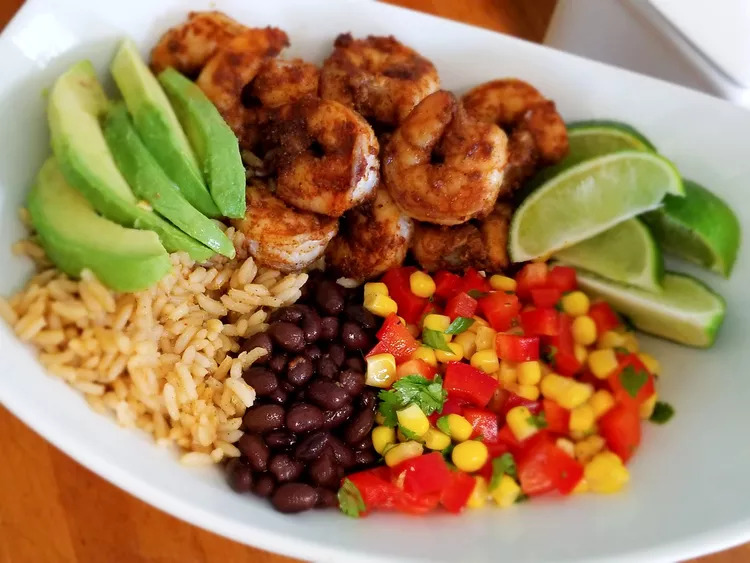

Home
Grain Bowl with Blackened Shrimp, Avocado, and Black Beans

Description
This blackened shrimp salad bowl is big and bold in flavor and makes for a
low-calorie meal packed with shrimp, brown rice, corn, crisp bell pepper,
black beans, and avocado. Easy to create with ingredients you probably
already have in your kitchen/pantry. If you prefer to serve burrito-style,
just heat up some flour tortillas and wrap it all up. Either way, it's
delish!
Ingredients
Rice
- 1 ⅛ cups water
- ½ cup dirty rice mix (such as Zatarain's® Dirty Brown Rice)
Shrimp
- 1 pound large shrimp, peeled and deveined
- 1 tablespoon chili powder
- 2 teaspoons paprika
- 1 ½ teaspoons cumin
- 1 teaspoon onion powder
- 1 teaspoon salt
- ¼ teaspoon ground black pepper
- 2 tablespoons olive oil
Corn Salad
- 1 (15 ounce) can corn, drained
- 1 red bell pepper, diced
- ¼ cup chopped fresh cilantro
- 1 lime, juiced
- 1 tablespoon olive oil
Greek Yogurt Avocado-Cilantro Dressing
- 1 avocado
- ¼ cup chopped fresh cilantro
- ¼ cup plain Greek yogurt (such as Chobani®)
- 1 clove garlic
- 3 tablespoons olive oil
- ½ teaspoon salt
- ¼ teaspoon ground black pepper
- 1 (15 ounce) can black beans, drained
- 1 avocado, sliced
- 1 lime, cut into wedges
Steps
-
Combine water and dirty rice mix in a saucepan and bring to a boil.
Reduce heat to low and cover. Cook until water is absorbed, about 45
minutes. Remove from heat and let stand 5 minutes. Fluff rice with a
fork and set aside until needed.
-
While rice is cooking, combine shrimp, chili powder, paprika, cumin,
onion powder, salt, and black pepper in a bowl.
-
Heat oil in a medium cast iron skillet over medium-high heat. Add shrimp
and cook until no longer pink, about 2 minutes per side.
-
Mix corn, red bell pepper, cilantro, lime juice, and olive oil together
in a bowl to make corn salad.
-
Combine avocado, cilantro, yogurt, garlic, olive oil, salt, and black
pepper in a food processor. Pulse until dressing is smooth.
-
Assemble bowls by dividing cooked rice, cooked shrimp, corn salad, black
beans, and sliced avocado evenly. Drizzle with dressing and garnish with
lime wedges.